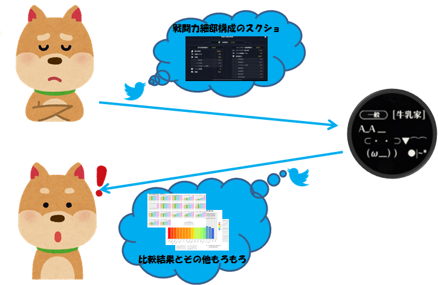
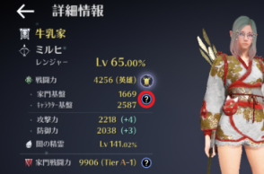
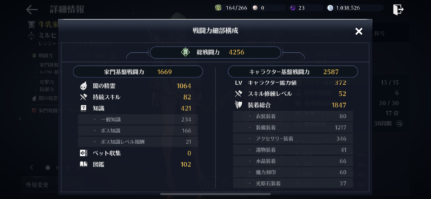

黒い砂漠モバイルでは、他の人の戦闘力の構成は非公開です。そのため、Twitter上で戦闘力細部構成のスクリーンショットをおくってもらい、分析？しています。

自分のキャラクター情報を表示し、 赤丸の?をタップ。

そうすると、戦闘力細部構成が表示されます。

スクリーンショットを@GyuNyuYeah_BDMまでDMでお送りください。
スクリーンショットは、表示したまま(光原石が見切れるくらい)で大丈夫です。
成長ボーナスは他の項目から算出できますし、成長ボーナスの細部は記録していません。
追って、各戦闘力帯域の平均との比較および相関係数と散布図のプロットをお送りいたします。
なお、DMはフォロー外からも受け取るようにしています。
ゲーム用アカウント以外しかアカウントがなく、痕跡を残したくない場合は、メッセージ内で教えてください。
その場合、フォローをしません。
こちらからプロットを送信した後は、DMを削除していただいてもかまいませんし、不安であればブロックしていただいて構いません。
嫁さんに内緒の作業(黒さば自体も含めて)です(;ωA
対応可能な時間帯の目安は以下のとおり。
上記時間以外にお送りいただいた分は後ほど対応いたします。